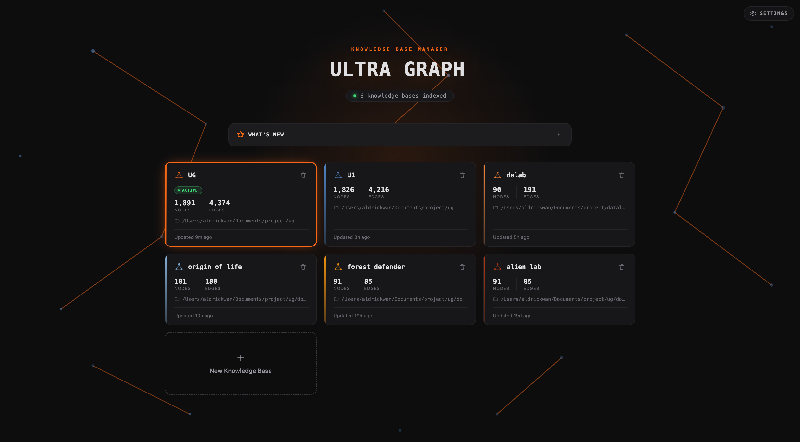
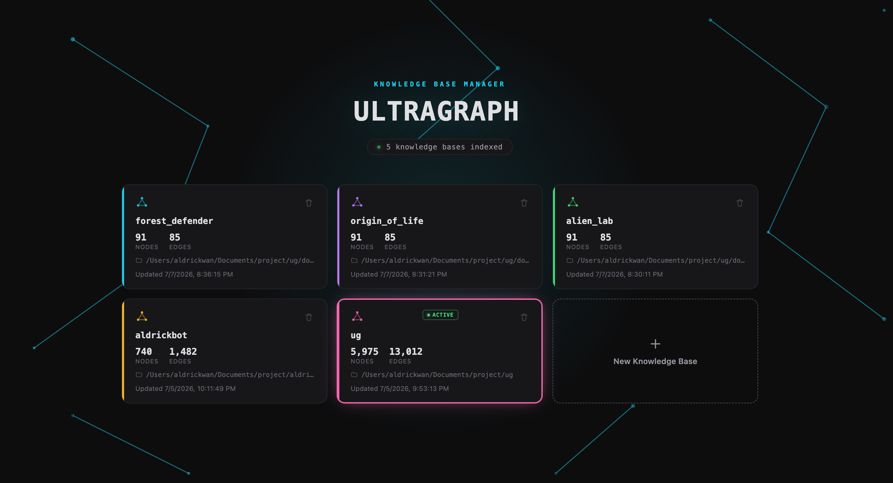

UltraGraph · ug
UltraGraph · ugThe right context, in seconds.
Naive RAG fails on codebases.
One wrong top-1 vector hit poisons the whole neighborhood. Most real questions span five or more nodes — there is no single seed.
Errors compound
A wrong top-1 vector hit taints every downstream expansion. The seed is the answer's blast radius.
No single seed exists
"How does auth work?" lives across handlers, middleware, configs, types — at least five nodes, none privileged.
MMR ≠ relevance
MMR optimizes diversity, not answer quality. The rerank step is a heuristic, not a retrieval signal.
# query: "how does auth work" # top-1 vector hit: → src/utils/passwordHash.ts // adjacent, not central # BFS expansion seeded from above: → crypto.ts · bcrypt-wrapper.ts · hash-helpers.ts // missing: oauth, middleware, session # MMR rerank: picked 3 "diverse" hash utilities. Answer never recovers.
One graph. Every relationship. Grounded answers.
UltraGraph indexes your codebase into a single structural graph, then lets that structure guide retrieval — so one relevant hit surfaces the whole neighborhood an answer needs, not just its nearest vector neighbors.
One graph, not isolated chunks
Files, symbols, and every relationship between them — calls, imports, extends — land in a single queryable graph. Nothing is retrieved in isolation.
Retrieval follows structure
Personalized PageRank walks outward from every relevant seed at once, surfacing the neighborhood an answer actually needs — not a lone top-1 hit.
Local-first, zero setup
Runs on your machine in seconds — no external services required, ready for any AI agent via MCP.

A repo becomes a graph, instantly viewable.
- Parallel, incremental indexing —
.gitignore-aware,blake3-cached - Artifact filtering built in —
*.min.js,*.bundle.js,dist/skipped by default; add your own viaUG_IGNORE="vendor/,*.generated.ts" - Docs KB, code KB, or mixed — markdown/PDF/Office document collections and source repos index into the same graph model
- 7 languages — TypeScript, JavaScript, Python, Java, Rust, Markdown, PDF
- 9 structural edge types + K-hop BFS, centrality, cycles, shortest path
- One binary serves it all — visualization + full REST API + chat UI, zero setup
- Smart staleness detection — automatic warnings when index falls out of sync with source
- Enhanced symbol context — rich signatures and descriptions for better code understanding
$ ug gen --serve # index → graph → ingest → viz → live server ▸ listening on http://127.0.0.1:8080

Many seeds. One walk. Token-budgeted answer.
Every node is embedded and written into OverGraph as it's ingested — vector + full-text indexes, built automatically. At query time, Personalized PageRank seeded by RRF (HippoRAG-style) replaces the old vector top-1 → BFS → MMR rerank cascade.
stage 1 RRF seed pool · vector + FTS
top-16 hits → weighted personalization vector (not fixed BFS roots)
stage 2 Personalized PageRank
random walk + restart, edge-type weighted — calls > extends > imports > … > contains
stage 3 Token-budgeted assembly
top-K by PPR · attach snippets · apply char budget
search · traverse · find_symbols · code_query · regen + project_overview + more — try any with ug mcp call
"How many?" in one call, not one grep per file.
Counting, ranking, distribution and blast-radius questions run as aggregations over the indexed graph — 33 named presets, or raw GQL when none fits. What an agent would otherwise answer by reading the whole repo, at a thousandth of the tokens.
$ ug query long_functions_by_folder folder count avg_loc ▸ native/src 28 162.4 ▸ native/src/vis/js 10 140.2 ▸ native/src/indexer/languages 4 140.2 ▸ native/src/indexer 2 127.5 rows 1–4 of 4 · 47 graph matches before grouping coverage: loc 2697/2821 (96%) · is_test 2805/2821 (99%)
$ ug query impact --arg target=src/storage/store.rs file dependents test_paths ▸ src/storage/db.rs 22 0 ▸ src/storage/ingest.rs 15 0 ▸ src/main.rs 9 4 next: rerun with range "4-21"
census repo_census · biggest_files · language_breakdown where_to_start size long_functions(min_loc) · god_classes param_bloat(min_params) · deep_nesting(min_depth) docs comment_coverage · undocumented_hotspots undercommented_complexity dead code dead_code · orphan_files · duplicate_names arch dependency_fanin · coupling_matrix layering_violations(from_prefix, to_prefix) tests test_ratio · untested_symbols · retest_scope(target) risk impact(target) · impact_summary(target) · risky_symbols
$ ug query --gql "MATCH (n:Function) WHERE n.params > 6 RETURN n.folder AS f, count(*) AS c ORDER BY c DESC"
LLM-narrated walkthroughs. Flies the camera in the web UI.
GraphRAG picks the nodes that matter for your question, an LLM "tour guide" orders them into a narrative, and the result is an ordered itinerary bound to real graph nodes — ready to explore stop by stop.
$ ug tour "how does authentication work?" ❯ Auth Flow · from login to session This tour traces a request from the login endpoint through credential validation, token issuance, and middleware enforcement. ● Stop 1/5 · login handler (Function) src/auth/login.ts:42 POST /login — validates email + password │ pub async fn login(…) │ → calls ● Stop 2/5 · verify_credentials (Function) src/auth/verify.ts:18 Looks up the user by email, bcrypt-compares the password hash, returns the user profile. │ → calls ● Stop 3/5 · issue_token (Function) src/auth/jwt.ts:55 Signs a JWT with user claims and a 24h expiry. │ → extends ● Stop 4/5 · AuthMiddleware (Class) src/auth/middleware.ts:12 Extracts the Bearer token, verifies the signature, attaches the user to the request. ● Stop 5/5 · SessionStore (Class) src/auth/session.ts:89 Redis-backed session store with auto-refresh. ✦ That's the auth pipeline — from the HTTP handler through credential checks, token signing, and middleware enforcement.
- GraphRAG-powered retrieval — PPR picks the right nodes for your question
- LLM tour guide — orders stops into a coherent narrative, narrates each stop
- Web UI camera — flies the graph visualization stop to stop in
ug serve - SSE streaming — real-time progress from retrieval → planning → narration
- CLI + API parity —
ug tourandPOST /api/tour, identical results - No-LLM fallback —
--no-llmemits a ranked itinerary without a guide
$ curl -X POST http://localhost:8080/api/tour \ -H "Content-Type: application/json" \ -d '{"query":"auth flow","stream":true}' event: progress data: {"phase":"retrieved","candidates":14} event: progress data: {"phase":"writing","chars":924} event: tour data: { … full Tour JSON … }
ug tour "how does this codebase work?" — or ug tour -h for all options
Two ways in. One command to wire either.
$ ug connect claude ❯ How should your agent reach ug? 1) cli the agent runs `ug` directly — recommended 2) mcp MCP server only — tool calls over the protocol 3) both both, and let the agent choose # or say it up front — nine agents supported: $ ug connect cursor --cli # skill only (recommended) $ ug connect vscode --mcp # MCP server entry only $ ug disconnect claude # remove either
{
"name": "search",
"arguments": { "query": "how does auth work", "k": 8 }
}
$ ug mcp list ▸ search GraphRAG search (PPR). The primary entry point. ▸ semantic_search Lightweight pure-vector lookup ▸ traverse Walk graph N hops from seed nodes ▸ find_usages Inbound references to a node ▸ find_symbols Multi-name symbol lookup (incl. docstrings) ▸ file_outline Indexed symbols in one file ▸ get_code Full source for a node or file range ▸ project_overview Counts, biggest files, hotspot symbols ▸ shortest_path How two symbols are connected ▸ code_query Whole-repo stats: counts, distributions, blast radius ▸ graph_schema Node & edge types in graph ▸ list_projects Indexed projects on this machine ▸ regen Re-run index → graph → embed
$ ug mcp call find_symbols '{"name":"authenticate"}' ▸ [exact] function:src/auth.ts:authenticate ▸ [prefix] function:src/auth/middleware.ts:authenticateUser # Same tools over HTTP: $ GET http://localhost:8080/api/tools # discovery $ POST http://localhost:8080/api/tools/search # run any tool
--cli installs a skill that teaches ug --help and ug query --list — no idle context, never out of date
One command.
The right context.
Install or upgrade in one command
$ curl -fsSL https://ultra-graph.web.app/install.sh | sh
$ ug upgrade ▸ Current version v0.1.4 — checking latest release... ▸ Downloading v0.1.6 (ultragraph-macos-arm64.tar.gz)... 19.5 / 19.5 MB (100%) ▸ Installing to ~/.local/share/ultragraph/.ug... ✓ Upgraded to v0.1.6 ug version 0.1.6 (restart any running `ug serve` / MCP server to pick it up)
Index, serve, and explore your knowledge base
$ ug gen -i ~/.hermes/hermes-agent ▸ indexing 9.27s ▸ graph build 264ms ▸ embeddings (41,619) 618s ▸ node write 993ms ▸ edge write (95,071) 215ms ▸ Run `ug serve` & view at http://localhost:8080
$ ug app ▸ opening knowledge base manager window… ▸ choose a project or generate a new one
ug
· the right context, in seconds.
search/traverse) · HTTP API parity · ug tour guided walkthroughs · SSE streaming · ug active · project_overview stats